第０編 はじめに
第１章 不動産登記とは
第１節 総説
皆さんや皆さんのご家族が自宅を買った時には、おそらく不動産登記の手続きをしていると思う。もしかしたら、司法書士に払う登記費用が高い！と、ビックリした人もいるかもしれない。では、この「不動産登記」あとは、何だろう？何でお金をかけて、登記の手続きをしたのだろう？不動産登記には、次の意味がある。
①対抗力（民法177条）
民法で散々学習してきた、「民法177条」である。不動産について、自分の所有権や抵当権などの担保権を他の人に主張するには、「登記」をしておかなければならない。所有権には所有権の登記が、抵当権には抵当権の登記というものがある。
②権利推定力
登記どおりの権利関係が「あるんだろう」と推定される効果がある。
ex.不動産の買主が登記記録上売主が登記名義を有することを確認した場合には、過失は認められない（大判大2.6.16）。
③形式的確定力
登記がされている場合には、その権利を無視した登記はできない（その登記が有効か無効かは関係ない）。
ex.存続期間の満了により実体上、地上権が消滅していても、その抹消登記を申請していない以上、新たな地上権設定登記を申請することはできない。
これらの効果があるので、不動産登記をすることで、自分の権利を公示し、守ることができる。逆に、登記をしていなければ、二重譲渡で登記を備えておらず自己の所有権を失ってしまうなどの危険がある。司法書士の仕事の一つに不動産登記申請の代理がある。司法書士は、国民の権利を守る一手を担っているのである。
ではここで、まずはその「登記」を見てみよう。正式には、「登記事項証明書」というものだが、「登記簿謄本」と呼ばれることも多い。
【登記記録の例】
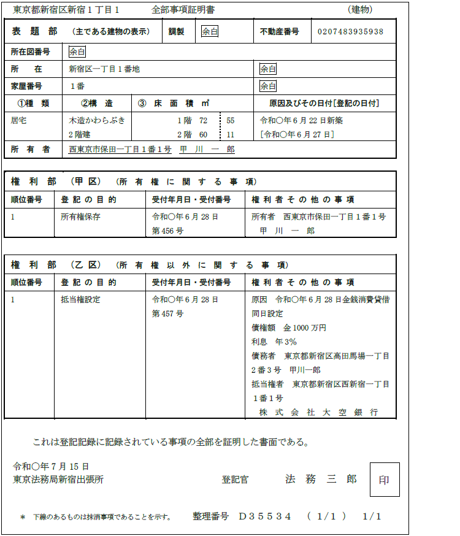
不動産登記は、構造上、以下のように分かれている。
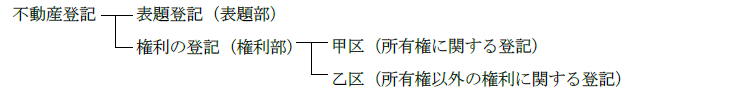
表題部：不動産の表示に関する登記（不動産を識別するために必要な事項が記載される。物理的現況の公示）がなされる。表題登記は、当事者に申請義務がある。原則として、表題部が作成された後、権利に関する登記が実行される。
権利部：不動産の権利に関する登記がなされる。当事者に申請義務はない。
1. 申請人（16条1項、当事者申請主義）
「当事者申請主義」という考え方が採られているため（16条1項）、不動産の所有者等に変更があった時には、自分達で登記を申請しなければならないのが原則である。そして、不動産登記では「共同申請主義」という考え方が採られているため（60条）、原則として、登記権利者と登記義務者の共同申請によらなければならない。
例えば、Ａが、所有している土地をＢに売り渡した場合、Ａは土地の登記名義人ではなくなり、新たにＢが当該土地の登記名義人となる。この場合、登記権利者（買主であるＢ）と登記義務者（売主であるＡ）の共同申請により、所有権移転登記を申請する。
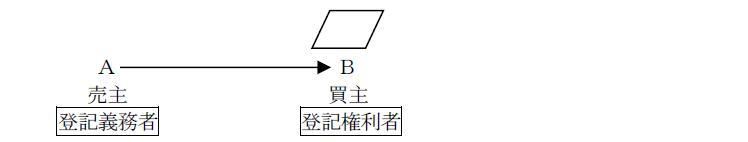
【用語ＭＥＭＯ】
2. 代理人となる人
司法書士である（司法書士法3条）。司法書士以外の者は、登記申請の代理をすることができない。
3. 登記簿を書き換える人
登記官である。登記は、登記官が登記簿に登記事項を記録することによって行う。
【用語ＭＥＭＯ】
1. 原則（形式的審査主義）
登記の申請が実体法上の権利変動と合致しているかについて、登記官は、申請人が提出した情報や登記記録から判断できるのみであって、積極的に審査する権限はない。登記官は、形式的審査権限しか有しないのが原則である。
2. 例外（実質的審査権限）
登記官は、申請人となるべき者以外の者が申請していると疑うに足りる相当な理由があると認めるときは、申請人等に対し、出頭を求め、質問をし、又は文書の提示その他必要な情報の提供を求める方法により、当該申請人の申請の権限の有無を調査しなければならない（24条1項）。つまり、申請人の本人確認については、登記官に実質的審査権限がある。虚偽の登記を防止するのが目的である。
調査を要する例
①登記官が、登記識別情報の誤りを原因とする補正又は取下げ若しくは却下が複数回されていたことを知った（不登準則33条1項5号）
②登記官が、申請情報の内容となった登記識別情報を提供することができない理由が事実と異なることを知った（不登準則33条1項6号）。
※例外の例外
上記にあてはまる場合であっても、当該申請を却下すべき場合には、申請権限の調査は不要である。登記がなされないなら調査をしてもムダだからである。
3. 他の登記所の登記官への嘱託
登記官が本人確認の調査のため申請人の出頭を求めた場合において、申請人から遠隔の地に居住していること又は申請人の勤務の都合を理由に他の登記所に出頭したい旨の申出があり、その理由が相当と認められるときは、登記官は当該他の登記所の登記官に本人確認の調査を嘱託することができる（不登準則34条1項、24条2項）。
第２節 登記申請
まずは一番覚えていただきたい売買による所有権移転登記（売買）の申請書を見てみよう。
【申請例1 所有権移転 売買】
事例： Ａが、自分の土地を、令和○年6月28日に、Ｂに売却した。土地の課税標準の額は、金1000万円である。
【完了後の登記記録】
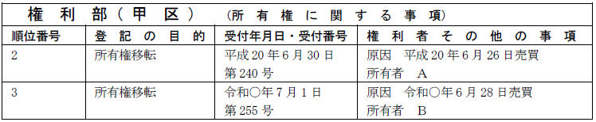
所有権移転の登記は、相続その他の一般承継の場合を除き、登記権利者と登記義務者との共同申請によってなされる（60条）。
1. 申請情報の内容
(1) 登記の目的
単独所有の不動産のすべてを売買した場合：「所有権移転」
単独所有の不動産の一部を売買した場合：「所有権一部移転」
(2) 登記原因及びその日付
登記原因は「売買」と記載し、日付は所有権移転の日を記載する。
所有権移転の日は、売買契約日であるのが原則である。しかし、当事者が所有権移転の時期を特約した場合はその特約で定めた日となる。
(3) 申請人
登記権利者：買主
登記義務者：売主
(4) 添付情報
①登記原因証明情報（61条、不登令別表30添付情報イ）
なぜ今回の登記申請をしているか？（登記の原因）がわかるように提供する。例外的に不要とされるものもあるが、原則としてどの登記にも必要である（61条）。
②登記識別情報（22条本文）
登記義務者が所有権を取得した際の登記識別情報
共同申請では登記義務者のものを提供するのが原則である。
③印鑑証明書（不登令16条2項、18条2項）
登記義務者の印鑑証明書
所有者が登記義務者となる登記では、委任状または登記申請書に押印した印鑑の印鑑証明書を提供しなければならない。
④住所証明情報（不登令別表30添付情報ハ）
所有権移転の登記の際に、所有者となる者の住所を証する情報を提供する。自然人の場合は、住民票の写し等である。①現在の正しい住所で登記をさせるため、②税金を請求するためである。
⑤代理権限証明情報
(5) 登録免許税
不動産の価額×20/1000（登免法別表1.1.(2)ハ）
2. 登記事項
(1) 共通の登記事項
登記事項は、登記の内容により異なる。
権利の登記に共通の登記事項は、以下のとおりである（59条1号～4号）。
ⅰ 登記の目的
ⅱ 申請の受付の年月日及び受付番号
ⅲ 登記原因及びその日付
ⅳ 登記に係る権利の権利者の氏名又は名称及び住所並びに登記名義人が2人以上であるときは当該権利の登記名義人ごとの持分
ⅴ その他、定めがあるときに登記事項となるもの（59条5号～8号）
(2) 所有権の登記特有の登記事項
所有権の登記の場合、以下の事項も登記事項となる（不登法73条の2第１項第1号、第2号）。
ⅰ 所有権の登記名義人が法人であるときは、会社法人等番号その他の特定の法人を識別するために必要な事項（不登規156条の2）
①会社法人等番号を有する法人：当該法人の会社法人等番号
②会社法人等番号を有しない法人であって、外国の法令に準拠して設立されたもの：当該外国の名称
③上記①・②のいずれにも該当しない法人：当該法人の設立の根拠法の名称
ⅱ 所有権の登記名義人が国内に住所を有しないときは、その国内における連絡先となる者の氏名又は名称及び住所その他の国内における連絡先に関する事項（不登規156条の5）
1. 登記原因証明情報
登記原因証明情報は、申請する登記の内容によって異なるが、売買の場合には売買契約書を提供することも、報告形式の登記原因証明情報を提供することもできる。報告形式の登記原因証明情報とは、登記申請のために作成された登記原因証明情報であり、登記の原因となる具体的な事実と法律行為に該当する具体的な事実が記載されたものである。
報告形式の登記原因証明情報は、登記権利者と登記義務者が共同で作成してもよいが、登記義務者のみが作成してもよい。権利を失う登記義務者が作成に関与すれば、登記の真正は確保されるからである。
報告形式の登記原因証明情報でもよいか？
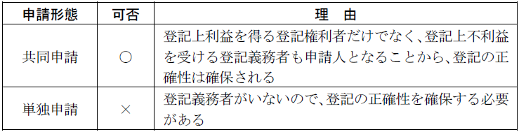
2. 登記識別情報（登記済証）
登記識別情報とは、アラビア数字その他の符号の組合せにより、不動産及び登記名義人となった申請人ごとに定められるパスワードであり（不登規61条）、申請人自らが登記名義人となる場合に通知される（21条本文）。
(1) オンライン庁（法務大臣の指定を受けた登記所）
登記義務者が登記済証と登記識別情報のどちらを持っているかは、その登記所がオンライン化したタイミングによる。
オンライン庁とは、電子申請（オンライン申請）に対応した登記所のことで、法務大臣が指定する（附則6条1項）。
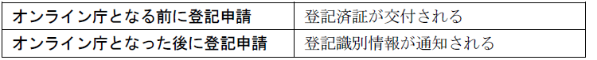
(2) オンライン庁となった時期
オンライン庁となる法務大臣の指定日は、登記所によって、異なる。平成17年3月～から平成20年7月に、全国の登記所が順次法務大臣の指定を受けた。よって、現在はすべての登記所がオンライン庁となっている。
3. 印鑑証明書
「印鑑証明書」とは？
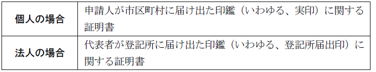
(1) 不動産登記に出てくる印鑑証明書の種類
(a) 申請人の申請意思を確認するための印鑑証明書
所有権の登記名義人が登記義務者となる場合には、原則として、申請書（本人申請の場合）又は委任状（代理人による申請の場合）に実印を押印し、押印した印鑑について、印鑑証明書の提供が必要である（不登令16条2項、18条2項）。
(b) 文書成立の真正を担保させるための印鑑証明書
提供する同意書や承諾書等に実印を押印し、押印した印鑑について、その印鑑証明書の提供が必要とされる（不登令19条2項）。
【ここがポイント】
以下、上記(1)(a)の印鑑証明書について記載する。
(2) 作成期限
申請書・委任状に押印された印鑑に関する印鑑証明書は、作成後3か月以内のものでなければならない（不登令16条3項、18条3項）。
台風被害等により登記所が事務停止をした場合であっても、作成後3か月を経過した印鑑証明書の有効期間について、事務停止期間を控除して取り扱う特例は認められない（昭34.12.16民甲2906）。
(3) 発行時期
申請情報に記録された登記原因の発生の日以前に交付された印鑑証明書を、登記義務者の印鑑証明書として提供することはできる。印鑑証明書は実印であることを証明するものであるため、発行日付は問題とならないからである。
4. 住所証明情報
(1) 提供を要する登記申請
所有権登記名義人となる者が発生する登記については、その者の住所証明情報の提供を要する。
ⅰ 所有権保存登記の申請人（不登令別表28添付情報ニ、29添付情報ハ）
ⅱ 所有権（持分）移転登記の登記権利者（不登令別表30添付情報ロ）
ⅲ 新たに登記名義人となる者がいる所有権更正登記の登記権利者（登研391P.110）
（理由）
①現在の正しい住所で登記をさせる（虚無人名義の登記防止）
②税金を請求するため（毎年1月1日における不動産の所有者に固定資産税が課される）
(2) 具体例
自然人：①住民票の写し、住民票の除票、②印鑑証明書、③戸籍の附票の写し
なお、住民基本台帳法に規定する住民票コードを提供した場合、住所証明情報の提供を省略できる（不登令9条、不登規36条4項）。
法人：①登記事項証明書、②代表者事項証明書
法人の会社法人等番号を提供した場合、住所証明情報の提供を省略することができる（不登令9条、不登規36条4項）。
【用語ＭＥＭＯ】
5. 委任状
代理人により登記の申請をする場合には、その申請権限を証するため、代理権限証明情報を、申請情報と併せて提供しなければならないのが原則である（不登令7条1項2号）。
司法書士への委任による代理申請の場合、代理権限証明情報は委任状である。
【報告形式の登記原因証明情報の見本（売買を原因とする所有権移転登記）】
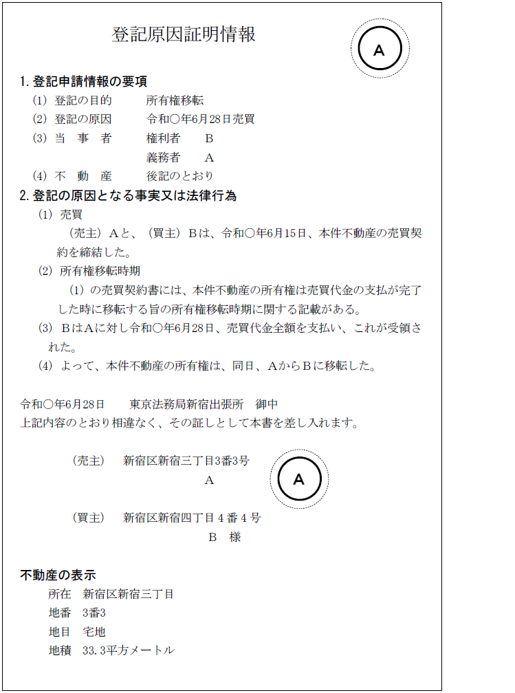
【登記識別情報の見本（売買を原因とする所有権移転の登記）】
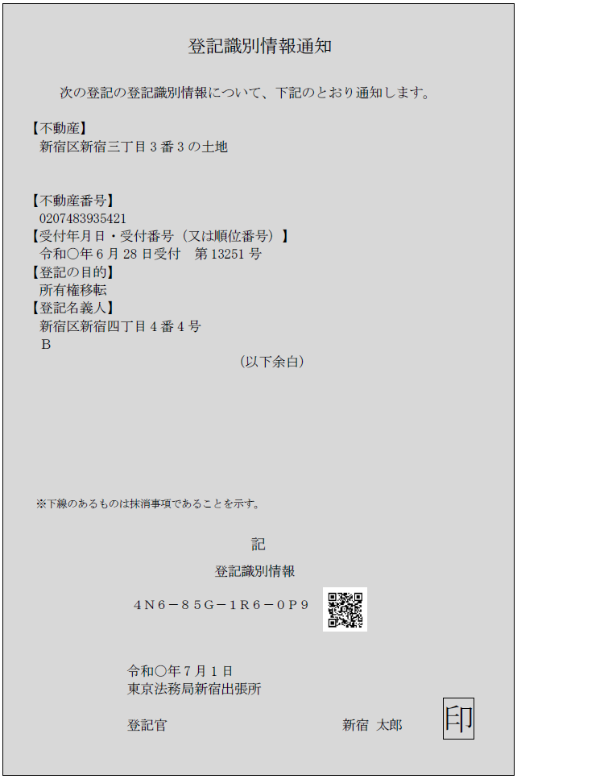
【登記済証の見本（売買を原因とする所有権移転の登記）】
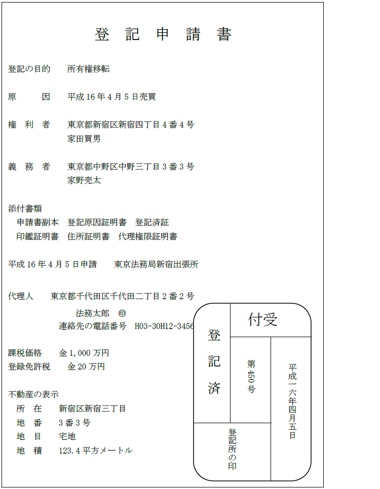
※この見本は、横書きの申請書副本を基にした登記済証であるが、縦書きの申請書副本を基にした登記済証も存在する。
【司法書士への委任状の見本】
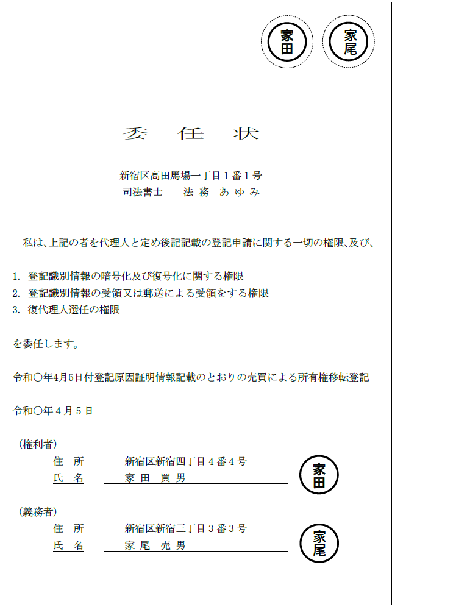
※「登記原因証明情報記載のとおり○○の登記の申請を委任する」等の振り合いにより、登記原因証明情報を引用して作成した委任状を作成することも認められる（昭39.8.24民甲2864）